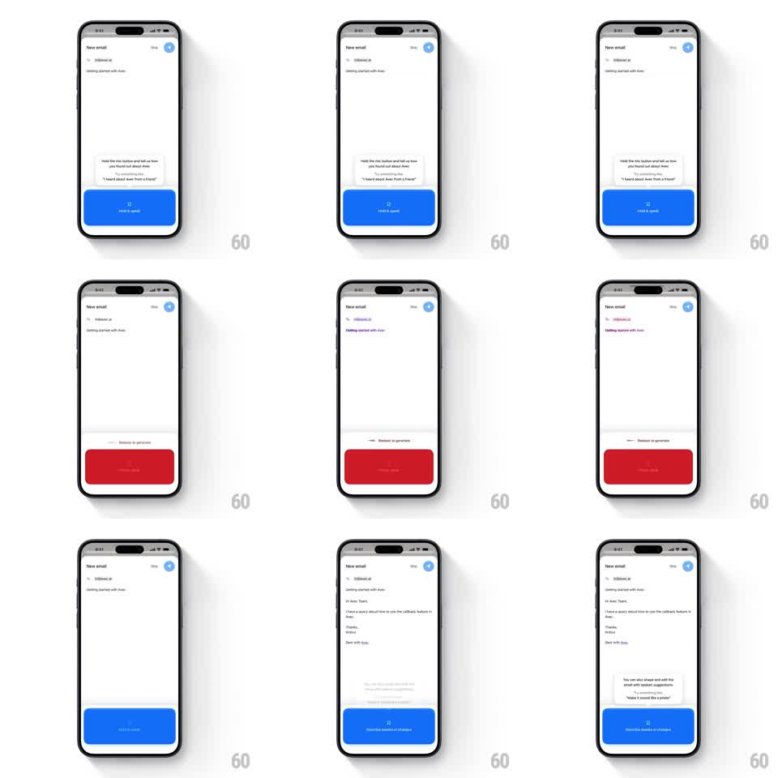

Media
Frame-by-frame

Rebuild this interaction 1:1: Avec's hold-to-talk compose - holding the blue mic button turns it red with a live waveform, releasing generates the email body line by line, and a coaching tooltip updates between states.

Rebuild this interaction 1:1: Avec's hold-to-talk compose - holding the blue mic button turns it red with a live waveform, releasing generates the email body line by line, and a coaching tooltip updates between states.
## Integration
Integration: stack-agnostic spec - springs given as stiffness/damping, timed motions as duration + curve; map every value to your framework and animation library of choice.
## Scene
New email screen: To/Subject rows up top, an empty body, a tooltip bubble above a full-width blue "Hold & speak" button. Recording state: the button goes red with "Release to generate" and a hint. After: the generated email body fills in and the tooltip switches to editing suggestions ("'Make it sound like a pirate'").
## Motion spec
Pattern: press-and-hold state machine - idle, recording, generating, written.
- Press: the button squashes (scaleY 0.94, 100ms) then floods red from the bottom (200ms); the label crossfades to "Release to generate" and a thin waveform bars row animates along its top edge (bars dance at 8-12Hz, amplitude follows input).
- The tooltip bubble lifts 4px and swaps copy with a 150ms fade.
- Release: the button flashes back to blue, the waveform collapses (150ms), and a brief "Generating" shimmer sweeps the body area (400ms).
- Generated text types into the body line by line (each line fades up 8px, 120ms stagger), then the tooltip morphs to the editing hint with the button returning to "Hold & speak".
## Calibration
- Red means live mic - the flood is immediate on hold, before any waveform.
- Text generation reads as composed, not pasted: visible line-by-line arrival.
## Reduced motion
Button color crossfades; body text fades in whole (250ms).
## Don't miss
- The tooltip is anchored to the button and never covers the body text.
- Releasing early (under ~400ms) springs back with no recording - an accidental-tap guard.